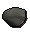

")
Fremennik Armour Guide
Introduction | Getting the Essentials | Making Rockshell Armour | Making Spined Armour | Making Skeletal Armour
Getting your Armour made | Rockshell Armour Stats | Spined Armour Stats | Skeletal Armour Stats
Getting your Armour made | Rockshell Armour Stats | Spined Armour Stats | Skeletal Armour Stats
Introduction
Fremennik armour is only available to RuneScape Members. Please subscribe to get this feature.
![[image]](../../img/main/kbase/npc/misc/jarvald.gif) First and foremost, it is important that you complete the Fremennik Trials quest. Anyone can kill the monsters for the drops to make the Fremennik armour, but only members of the clan itself can get it made into the end product.
First and foremost, it is important that you complete the Fremennik Trials quest. Anyone can kill the monsters for the drops to make the Fremennik armour, but only members of the clan itself can get it made into the end product.Waterbirth Island is only accessible by boat. To get there you will need to speak to Jarvald on the far west dock in Rellekka.
Jarvald will also sail his ship to Waterbirth Island for people who are not a member of the Fremennik clan, so all are welcome on the dangerous trip into Waterbirth Island.

When you are on the Island, he is waiting in the place shown on the map above, simply talk to him again to return to Rellekka.
Getting the Essentials
To make the armour you will need to get certain items that are obtained from the different monsters within the island. When you go around to the 'back' of Waterbirth Island, you will see that there is a ladder down. This ladder is the entrance to the caves of Waterbirth Island, the deeper you go, the closer you will get to high risk monsters and the more likely you will die, so travel only as far as you are willing to risk. When you come down the first entrance ladder you will be in a large dungeon, where there are three doors into chambers containing different monsters.

To get past the doors, you will need two people to stand on a 'pad' each on the floor, and the door will open. You can leave on your own, the door will open when selected if you are inside.
Each of the three different monsters drop the parts needed for the armour you seek, the following describes what you will need from each monster and the armour you can make.
Dagannoth hide is obtained from killing the normal dagannoths in the original room you enter.
Rockshell Armour
All the essentials to make this armour are dropped by the giant rock crabs in the room outlined on the map above. When you have the pieces and cash to make your desired piece of armour, visit Skulgrimen in Rellekka.
| Piece of Armour | Items needed | |||||
![[image]](../../img/main/kbase/armour/melee/rockshellhelm.gif) Rockshell helmet |
![[image]](../../img/main/kbase/guides/waterbirth_armour/dagannoth_hide.gif) Dagannoth hide |
x1 | ![[image]](../../img/main/kbase/guides/waterbirth_armour/melee_headchunk.gif) Rockshell chunk |
x1 | ![[image]](../../img/main/kbase/items/misc/coins.gif) Coins |
x5000 |
![[image]](../../img/main/kbase/armour/melee/rockshellplate.gif) Rockshell plate |
Dagannoth hide |
x3 |  Rockshell shard |
x1 | Coins |
x10000 |
![[image]](../../img/main/kbase/armour/melee/rockshelllegs.gif) Rockshell legs |
Dagannoth hide |
x2 | ![[image]](../../img/main/kbase/guides/waterbirth_armour/melee_legsplinter.gif) Rockshell splinter |
x1 | Coins |
x7500 |
![[image]](../../img/main/kbase/armour/melee/rockshellboots.gif) Further to the items needed to form the basis of rockshell armour, the giant rock crabs also drop two more useful items to complete your rockshell armour - the gloves and boots.
Further to the items needed to form the basis of rockshell armour, the giant rock crabs also drop two more useful items to complete your rockshell armour - the gloves and boots.
Spined Armour
All the essentials to make this armour are dropped by the dagannoths in the room outlined on the map above. When you have the pieces and cash to make your desired piece of armour, visit Sigli the hunter in Rellekka.
| Piece of Armour | Items needed | |||||
![[image]](../../img/main/kbase/armour/ranged/spined_helm.gif) Spined helm |
Dagannoth hide |
x1 | ![[image]](../../img/main/kbase/guides/waterbirth_armour/ranged_headcircular.gif) Circular hide |
x1 | Coins |
x5000 |
![[image]](../../img/main/kbase/armour/ranged/spined_body.gif) Spined body |
Dagannoth hide |
x3 | ![[image]](../../img/main/kbase/guides/waterbirth_armour/ranged_legflattened.gif) Flattened hide |
x1 | Coins |
x10000 |
![[image]](../../img/main/kbase/armour/ranged/spined_chaps.gif) Spined chaps |
Dagannoth hide |
x2 | ![[image]](../../img/main/kbase/guides/waterbirth_armour/ranged_bodystretched.gif) Stretched hide |
x1 | Coins |
x7500 |
![[image]](../../img/main/kbase/armour/ranged/spined_boots.gif) Further to the items needed to form the basis of spined armour, the dagannoths also drop two more useful items to complete your spined armour - the gloves and boots.
Further to the items needed to form the basis of spined armour, the dagannoths also drop two more useful items to complete your spined armour - the gloves and boots.
Skeletal Armour
All the essentials to make this armour are dropped by the wallasalkis in the room outlined on the map above. When you have the pieces and cash to make your desired piece of armour, visit Peer the Seer in Rellekka.
| Piece of Armour | Items needed | |||||
![[image]](../../img/main/kbase/armour/mage/skeletalhat.gif) Skeletal helm |
Dagannoth hide |
x1 | ![[image]](../../img/main/kbase/guides/waterbirth_armour/mage_headskull.gif) Skull piece |
x1 | Coins |
x5000 |
![[image]](../../img/main/kbase/armour/mage/skeletalplate.gif) Skeletal top |
Dagannoth hide |
x3 | ![[image]](../../img/main/kbase/guides/waterbirth_armour/mage_bodyribs.gif) Ribcage piece |
x1 | Coins |
x10000 |
![[image]](../../img/main/kbase/armour/mage/skeletallegs.gif) Skeletal bottoms |
Dagannoth hide |
x2 | ![[image]](../../img/main/kbase/guides/waterbirth_armour/mage_legfibula.gif) Fibula piece |
x1 | Coins |
x7500 |
![[image]](../../img/main/kbase/armour/mage/skeletalboots.gif) Further to the items needed to form the basis of skeletal armour, the Wallsalkis also drop two more useful items to complete your skeletal armour - the gloves and boots.
Further to the items needed to form the basis of skeletal armour, the Wallsalkis also drop two more useful items to complete your skeletal armour - the gloves and boots.
Getting your Armour made

For the cost and items outlined in the tables above, you can get your armour made, which will provide the following statistics/bonuses.
Rockshell Armour Stats
| Item | Levels Required |
||||||||||||||||||
| Attack Bonuses | Defence Bonuses | Other | |||||||||||||||||
![[Image: Stab]](../../img/main/kbase/table_text/stab1.gif "Stab") |
![[Image: Slash]](../../img/main/kbase/table_text/slash1.gif "Slash") |
![[Image: Crush]](../../img/main/kbase/table_text/crush1.gif "Crush") |
![[Image: Magic]](../../img/main/kbase/table_text/magic1.gif "Magic") |
![[Image: Range]](../../img/main/kbase/table_text/range1.gif "Range") |
|
|
|
|
|
![[Image: Summoning]](../../img/main/kbase/table_text/summoning1.gif "Summoning") |
![[Image: Strength]](../../img/main/kbase/table_text/strength1.gif "strength") |
![[Image: Prayer]](../../img/main/kbase/table_text/prayer1.gif "Prayer") |
|||||||
Rockshell helmet |
40 |
+ 0 | + 0 | + 0 | - 6 | - 2 | + 30 | + 32 | + 27 | - 1 | + 30 | + 6 | + 0 | + 0 | |||||
Rockshell platebody |
40 |
+ 0 | + 0 | + 0 | - 30 | - 10 | + 82 | + 80 | + 72 | - 6 | + 80 | + 30 | + 0 | + 0 | |||||
Rockshell platelegs |
40 |
+ 0 | + 0 | + 0 | - 21 | - 7 | + 51 | + 49 | + 47 | - 4 | + 49 | + 10 | + 0 | + 0 | |||||
![[image]](../../img/main/kbase/armour/melee/rockshellgloves.gif) Rockshell gloves |
40 |
+ 0 | + 0 | + 0 | + 0 | + 0 | + 0 | + 1 | + 2 | + 0 | + 0 | + 0 | + 0 | + 0 | |||||
Rockshell boots |
40 |
+ 0 | + 0 | + 0 | + 0 | + 0 | + 0 | + 1 | + 1 | + 0 | + 0 | + 1 | + 0 | + 0 | |||||
Spined Armour Stats
| Item | Levels Required |
||||||||||||||||||
| Attack Bonuses | Defence Bonuses | Other | |||||||||||||||||
|
|
|
|
|
|
|
|
|
|
|
|
|
|||||||
Spined helm |
40 40 |
- 6 | - 6 | - 6 | - 6 | + 6 | + 6 | + 6 | + 6 | + 6 | + 0 | + 6 | + 0 | + 0 | |||||
Spined body |
40 40 |
+ 0 | + 0 | + 0 | - 15 | + 15 | + 40 | + 32 | + 45 | + 20 | + 40 | + 30 | + 0 | + 0 | |||||
Spined chaps |
40 40 |
+ 0 | + 0 | + 0 | - 10 | + 8 | + 22 | + 16 | + 24 | + 8 | + 22 | + 10 | + 0 | + 0 | |||||
![[image]](../../img/main/kbase/armour/ranged/spined_gloves.gif) Spined gloves |
40 40 |
+ 0 | + 0 | + 0 | + 0 | + 0 | + 1 | + 2 | + 0 | + 0 | + 0 | + 0 | + 0 | + 0 | |||||
Spined boots |
40 40 |
+ 0 | + 0 | + 0 | + 0 | + 0 | + 1 | + 1 | + 0 | + 0 | + 0 | + 1 | + 0 | + 0 | |||||
Skeletal Armour Stats
| Item | Levels Required |
||||||||||||||||||
| Attack Bonuses | Defence Bonuses | Other | |||||||||||||||||
|
|
|
|
|
|
|
|
|
|
|
|
|
|||||||
Skeletal helmet |
40 40 |
+ 0 | + 0 | + 0 | + 2 | - 2 | + 10 | + 9 | + 11 | + 3 | + 0 | + 6 | + 0 | + 0 | |||||
Skeletal top |
40 40 |
+ 0 | + 0 | + 0 | + 8 | - 10 | + 35 | + 25 | + 42 | + 15 | + 0 | + 30 | + 0 | + 0 | |||||
Skeletal bottoms |
40 40 |
+ 0 | + 0 | + 0 | + 6 | - 7 | + 22 | + 20 | + 24 | + 10 | + 0 | + 10 | + 0 | + 0 | |||||
![[image]](../../img/main/kbase/armour/mage/lightmystictop.gif) Skeletal gloves |
40 40 |
+ 0 | + 0 | + 0 | + 0 | + 0 | + 0 | + 1 | + 2 | + 0 | + 0 | + 0 | + 0 | + 0 | |||||
Skeletal boots |
40 40 |
+ 0 | + 0 | + 0 | + 0 | + 0 | + 0 | + 1 | + 1 | + 0 | + 0 | + 1 | + 0 | + 0 | |||||

More articles in
Miscellaneous Guides
|
|
|
Further Help
If this article does not help you, you may find the following sections of the RuneScape site helpful:
|
|